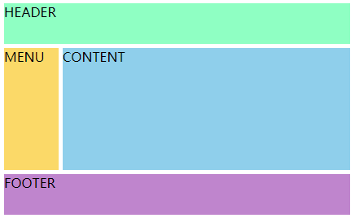
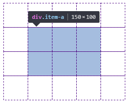

前言
前端布局大概有三种方式：
1.借助浮动、定位等方式布局；
2.flex布局
3.grid布局
由于在实际开发过程中，flex只在IE10以上支持（并且需要使用-ms-前缀兼容，IE11以上不用）,而grid的兼容比flex更加小，因此为了避免后面大规模的改动项目，现在还是使用浮动、定位等方式进行布局。
但从灵活性、易用性上来说，flex布局和grid布局一定是以后布局的趋势。
一、flex布局和grid布局比较
Flexbox 是局部布局，比如导航栏组件。Grid 是全局布局，通常用于整个页面的规划。二者从应用场景来说并不冲突。虽然 Flexbox 也可以用于大的页面布局，但是没有 Grid 强大和灵活。
兼容性比较：
二、flex布局和grid布局的简单使用
1.flex布局
为什么定义flex时，会有多种写法（box-flex以及box）？
答案：不同的写法是对应不同时期的 Flex 规范。
注意：设为 Flex 布局以后，子元素的float、clear和vertical-align属性将失效。
容器的六个属性
（1）flex-direction：决定主轴的方向（即项目的排列方向）。
取值：flex-direction: row | row-reverse | column | column-reverse;
（2）flex-wrap：默认情况下，项目都排在一条线（又称”轴线”）上，该属性定义是否可以换行。
取值：flex-wrap: nowrap | wrap | wrap-reverse;
（3）flex-flow：该属性是flex-direction属性和flex-wrap属性的简写形式，默认值为row nowrap。
（4）justify-content：定义了项目在主轴上的对齐方式。
取值：justify-content: flex-start | flex-end | center | space-between | space-around;
（5）align-items：定义项目在交叉轴上如何对齐。
取值：align-items: flex-start | flex-end | center | baseline | stretch;
（6）align-content：定义了多根轴线的对齐方式。如果项目只有一根轴线，该属性不起作用。
取值：align-content: flex-start | flex-end | center | space-between | space-around | stretch;
项目的常用属性
需要知道的是：
flex属性是flex-grow, flex-shrink和 flex-basis的简写，默认值为
0 1 auto,后两个属性可选。
（1）flex-grow属性定义项目的放大比例，默认为0，即如果存在剩余空间，也不放大。如果所有项目的flex-grow属性都为1，则它们将等分剩余空间（如果有的话）。如果一个项目的flex-grow属性为2，其他项目都为1，则前者占据的剩余空间将比其他项多一倍。
（2）flex-shrink属性定义了项目的缩小比例，默认为1，即如果空间不足，该项目将缩小。如果所有项目的flex-shrink属性都为1，当空间不足时，都将等比例缩小。如果一个项目的flex-shrink属性为0，其他项目都为1，则空间不足时，前者不缩小。
（3）flex-basis属性定义了在分配多余空间之前，项目占据的主轴空间（main size）。浏览器根据这个属性，计算主轴是否有多余空间。它的默认值为auto，即项目的本来大小。
（4）align-self属性允许单个项目有与其他项目不一样的对齐方式，可覆盖align-items属性。默认值为auto，表示继承父元素的align-items属性，如果没有父元素，则等同于stretch。
取值：align-self: auto | flex-start | flex-end | center | baseline | stretch;
常用例子
1 | <style> |
2.grid布局
容器属性
（1）grid-template-columns/grid-template-rows：使用空格分隔的值列表，用来定义网格的列和行。这些值表示网格轨道(Grid Track) 大小，它们之间的空格表示网格线。
可以不明确写出空格所表示的网格线，也可以明确的指定网格线名称。因此，有两种写法。
不明确写出空格所表示的网格线
1 | <style> |
明确的指定网格线名称
1 | <style> |
其中，网格线的命名方式如图所示：

1.如果定义包含多个重复值，则可以使用
repeat()表示法来简化定义：
grid-template-columns: repeat(3, 20px [col-start]) 5%;等价于
grid-template-columns: 20px [col-start] 20px [col-start] 20px [col-start] 5%;2.还可以使用
fr单位来设置网格轨道的大小 。
grid-template-columns: 1fr 1fr 1fr;
（2）grid-template-areas：通过引用 grid-area 属性指定的 网格区域(Grid Area) 名称来定义网格模板。重复网格区域的名称导致内容跨越这些单元格。一个点号（.）代表一个空的网格单元。这个语法本身可视作网格的可视化结构。
1 | <style> |
最终效果如图所示：

在HTML中定义一个类，设置该类属性时，通过
grid-area属性设置代表该模块的代号，最后在grid-template-areas中使用该代号。
（3）grid-column-gap/grid-row-gap：指定网格线的大小。即设置列/行之间间距的宽度。
grid-gap是
grid-column-gap和grid-row-gap的缩写语法。
1 | grid-column-gap: 10px; |
（4）justify-items：网格项内的内容在水平方向的对齐方式。
取值：justify-items: start | end | center | stretch;
（5）align-items：网格项内的内容在垂直方向的对齐方式。
取值：align-items: start | end | center | stretch;
（6）justify-content：当网格大小小于网格容器大小。 如果所有网格项(grid items) 都使用像 px 这样的非灵活单位设置大小，在这种情况下，您可以设置网格容器内的网格的对齐方式。该属性设置的是水平方向的对齐方式。
取值：justify-content: start | end | center | stretch | space-around | space-between | space-evenly;
（7）align-content：当网格大小小于网格容器大小。 如果所有网格项(grid items) 都使用像 px 这样的非灵活单位设置大小，在这种情况下，您可以设置网格容器内的网格的对齐方式。该属性设置的是垂直方向的对齐方式。
取值：align-content: start | end | center | stretch | space-around | space-between | space-evenly;
网格项属性
（1）grid-column-start/grid-column-end/grid-row-start/grid-row-end这四个属性通过指定网格线(grid lines) 来确定网格内网格项(grid item) 的位置。
1 | .item{ |
结果如图所示：

grid-column/grid-row分别为
grid-column-start+grid-column-end和grid-row-start+grid-row-end的缩写形式。
1 | grid-column: 2/5; |
效果如图所示：

（2）justify-self：网格项内的内容水平方向的对齐方式。和容器属性中的属性justify-items 的区别在于，它设置的是所有网格项的对齐方式。
（3）align-self：网格项内的内容垂直方向的对齐方式。
参考文章：